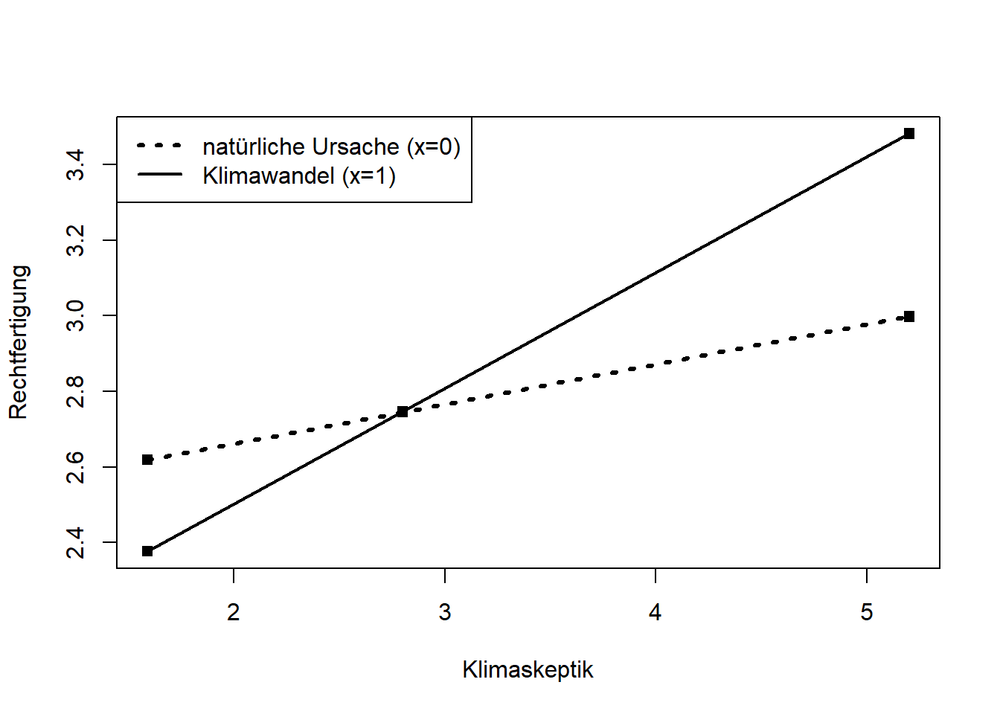

##Arbeitsverzeichnis checken
getwd()[1] "C:/Users/antje/Documents/studium PUK/Master-Publizistik/STUDIENASSISTENZ/Test Tutorial"Annie Waldherr
December 10, 2024
In diesem Tutorial lernen Sie - ein einfaches Moderationsmodell mit Hilfe von PROCESS zu berechnen, - die Ergebnisse zu interpretieren, - eine Mittelwertzentrierung der Variablen durchzuführen, - Moderationseffekte zu visualisieren und genauer zu untersuchen.
Wie immer prüfen wir zuerst mit “getwd()”, unter welchem Pfad unser Arbeitsverzeichnis ist. Alle Skripte und Datensätze, mit denen wir arbeiten wollen, sollten in diesem Ordner abgelegt sein.
Dann laden wir wieder mit dem Paket “pacman” die nötigen R-Pakete.
Laden Sie aus Moodle (Ordner „Uebung7“) das PROCESS-Skript für R herunter. Das Skript wurde vom Forscher Andrew F. Hayes geschrieben und ist auch unter diesem Link verfügbar: https://www.PROCESSmacro.org/download.html
Speichern Sie die Datei „process.R“ in Ihrem Arbeitsverzeichnis und führen Sie dann den folgenden Code aus, um die PROCESS Funktion zu laden.
**************** PROCESS Procedure for R Version 5.0 ******************
Written by Andrew F. Hayes, Ph.D. www.afhayes.com
Documentation available in Hayes (2022). www.guilford.com/p/hayes3
***********************************************************************
PROCESS is now ready for use.
Copyright 2013-2025 by Andrew F. Hayes ALL RIGHTS RESERVED
Workshop schedule at haskayne.ucalgary.ca/CCRAM
Information about PROCESS available at processmacro.org/faq.html Das Beispiel, das Hayes (2022) auch in seinem Buch verwendet (siehe Referenz unten), basiert auf einer Studie von Chapman und Lickel (2016) mit insgesamt 211 Personen, die alle einen Artikel über die Hungersnot in Afrika zu lesen bekamen, die durch die Dürre in der Region verursacht wurde. Die Hälfte der Teilnehmenden erhielt zusätzlich die Information, dass der Klimawandel die Dürre verursachte, während die übrigen Teilnehmenden keine Informationen über die Ursache der Dürre bekamen: Variable “frame” mit 1=Klimawandel und 0=natürliche Ursache.
Nachdem sie den Artikel gelesen hatten, beantworteten die Proband:innen eine Reihe von Fragen, inwiefern sie verschiedenen Rechtfertigungen zustimmten, den Opfern der Hungersnot nicht zu helfen (Variable “justify”). Höhere Werte bedeuten ein stärkeres Gefühl, dass die Hilfe für die Opfer nicht gerechtfertigt war.
Schließlich beantworteten die Teilnehmenden noch Fragen zu ihrer Überzeugung, dass der Klimawandel existiert (Variable “sceptic”). Je höher der Wert, desto skeptischer ist die Person in Bezug auf den Klimawandel.
Frage: Welches Skalenniveau haben die Variablen?
Wir wollen nun herausfinden, inwiefern das Framing der Katastrophe als durch den Klimawandel verursacht (UV) die Rechtfertigungen der Menschen beeinflusst, nicht zu helfen (AV), und ob dieser Effekt abhängig von der Skepsis einer Person gegenüber dem Klimawandel ist (Moderationseffekt)?
Mit dem unten stehenden Code, der Ihnen aus den vorigen Übungen bekannt ist, definieren wir unsere UV und AV und vergeben die zugehörigen Labels.
#UV, AV und Moderator definieren
df$uv <- df$frame
df$av <- df$justify
df$W <- df$skeptic
#Labels vergeben
label_uv <- "Frame"
label_av <- "Rechtfertigung"
label_W <- "Klimaskeptik"
glimpse(df)Rows: 211
Columns: 8
$ id <int> 1, 2, 3, 4, 5, 6, 7, 8, 9, 10, 11, 12, 13, 14, 15, 16, 17, 18,…
$ frame <int> 1, 1, 1, 1, 1, 0, 0, 1, 0, 0, 1, 1, 0, 0, 1, 1, 1, 1, 0, 0, 1,…
$ donate <dbl> 5.6, 4.2, 4.2, 4.6, 3.0, 5.0, 4.8, 6.0, 4.2, 4.4, 5.8, 6.2, 6.…
$ justify <dbl> 2.95, 2.85, 3.00, 3.30, 5.00, 3.20, 2.90, 1.40, 3.25, 3.55, 1.…
$ skeptic <dbl> 1.8, 5.2, 3.2, 1.0, 7.6, 4.2, 4.2, 1.2, 1.8, 8.8, 1.0, 5.4, 2.…
$ uv <int> 1, 1, 1, 1, 1, 0, 0, 1, 0, 0, 1, 1, 0, 0, 1, 1, 1, 1, 0, 0, 1,…
$ av <dbl> 2.95, 2.85, 3.00, 3.30, 5.00, 3.20, 2.90, 1.40, 3.25, 3.55, 1.…
$ W <dbl> 1.8, 5.2, 3.2, 1.0, 7.6, 4.2, 4.2, 1.2, 1.8, 8.8, 1.0, 5.4, 2.…Um einen ersten Eindruck über die Verteilungen der Daten zu gewinnen, erstellen wir Boxplots für die beiden metrischen Variablen.
Zudem lassen wir uns die deskriptiven Statistiken für die Gruppen nach Experimentalbedingung ausgeben.
#Deskriptive Statistiken berechnen
des_stat1 <- favstats(df$av ~ df$uv)
# Tabelle erstellen
kable (des_stat1,
col.names = c(label_uv,"Minimum", "1.Quartil",
"Median", "3.Quartil", "Maximum",
"M", "SD", "N", "Fehlend" ),
digits = 2)| Frame | Minimum | 1.Quartil | Median | 3.Quartil | Maximum | M | SD | N | Fehlend |
|---|---|---|---|---|---|---|---|---|---|
| 0 | 1.00 | 2.20 | 2.75 | 3.4 | 4.95 | 2.80 | 0.85 | 110 | 0 |
| 1 | 1.25 | 2.15 | 2.95 | 3.5 | 6.80 | 2.94 | 1.01 | 101 | 0 |
Die Gruppenmittelwerte deuten darauf hin, dass Teilnehmende, die einen Artikel lasen, in dem die Dürre auf den Klimawandel zurückgeführt wurde, den Rechtfertigungen für die Zurückhaltung von Hilfe stärker zustimmten, als die Teilnehmenden der Kontrollgruppe. Ein einfacher t-Test ergibt jedoch, dass dieser Unterschied statistisch nicht signifikant ist.
Welch Two Sample t-test
data: av by uv
t = -1.0413, df = 196.12, p-value = 0.299
alternative hypothesis: true difference in means between group 0 and group 1 is not equal to 0
95 percent confidence interval:
-0.3888410 0.1201029
sample estimates:
mean in group 0 mean in group 1
2.802364 2.936733 Es könnte aber sein, dass der verwendete Frame die Teilnehmenden der Studie auf unterschiedliche Weise beeinflusst hat, je nachdem ob sie dem Klimawandel skeptisch gegenüber stehen oder nicht. Um das herauszufinden, müssen wir einen Moderationseffekt prüfen (oder anders formuliert: einen Interaktionseffekt).
Bevor wir die Analyse fortsetzen, sollten wir aber gegebenenfalls Fälle mit fehlenden Werten aus der weiteren Analyse ausschließen. Dies ist für unseren Beispieldatensatz nicht relevant, aber der Vollständigkeit halber findet sich der notwendige Code-Chunk hier:
Mit dem folgenden Code wenden wir ein Moderationsmodell auf die Daten an. Hierzu nutzen wir die Funktion “process” aus dem heruntergeladenen PROCESS-Skript von Andrew Hayes. Wir definieren die Variablen y (=av), x (=uv), und w (=unsere Moderatorvariable W) und wählen “model = 1”. Mit dem Argument “decimals = 10.2” werden Dezimalzahlen auf zwei Stellen hinter dem Komma gerundet.
**************** PROCESS Procedure for R Version 5.0 ******************
Written by Andrew F. Hayes, Ph.D. www.afhayes.com
Documentation available in Hayes (2022). www.guilford.com/p/hayes3
***********************************************************************
Model: 1
Y: av
X: uv
W: W
Sample size: 211
***********************************************************************
Outcome Variable: av
Model Summary:
R R-sq MSE F df1 df2 p
0.50 0.25 0.66 22.54 3.00 207.00 0.00
Model:
coeff se t p LLCI ULCI
constant 2.45 0.15 16.45 0.00 2.16 2.75
uv -0.56 0.22 -2.58 0.01 -0.99 -0.13
W 0.11 0.04 2.76 0.01 0.03 0.18
int_1 0.20 0.06 3.64 0.00 0.09 0.31
Product terms key:
int_1 : uv x W
Test(s) of highest order unconditional interaction(s):
R2-chng F df1 df2 p
X*W 0.05 13.25 1.00 207.00 0.00
----------
Focal predictor: uv (X)
Moderator: W (W)
Conditional effects of the focal predictor at values of the moderator(s):
W effect se t p LLCI ULCI
1.59 -0.24 0.15 -1.62 0.11 -0.54 0.05
2.80 0.00 0.12 0.01 0.99 -0.23 0.23
5.20 0.48 0.15 3.21 0.00 0.19 0.78
******************** ANALYSIS NOTES AND ERRORS ************************
Level of confidence for all confidence intervals in output: 95
W values in conditional tables are the 16th, 50th, and 84th percentiles.Die Ausgabe enthält im oberen Teil die Modellzusammenfassung. Wir sehen, dass das Modell statistisch signifkant ist (p=0.00) und 25% Prozent der Varianz in den Daten aufklärt (R-sq=0.25).
Darauf folgt eine Tabelle mit den Modellkoeffizienten. Diese enthält die Regressionskoeffizienten (B-Werte) der UV und des Moderators W sowie den Interaktionseffekt von UV*W. Alle drei Koeffizienten sind statistisch hoch signifikant mit p<0.01. Der signifikante Interaktionseffekt bedeutet, dass der Einfluss des Framings auf die Rechtfertigung fehlender Hilfe durch die Einstellung der Proband:innen zum Klimawandel moderiert wird.
Unter “test(s) of highest order unconditional interaction(s)” erfahren wir, dass wir durch die Aufnahme des Interaktionsterms (d.h. des Moderators) signifikant mehr Varianz aufklären können als ohne diesen Term, und dass dieser Zuwachs in R-Quadrat 4.8% beträgt (r2-chng = 0.048).
Vorsicht: Die Koeffizienten für die AV und den Moderator dürfen wir leider nicht so interpretieren, wie wir es gewohnt sind, denn es handelt sich um sogenannte konditionale Effekte. Im multiplen Regressionsmodell geben die B-Werte an, um wie viele Skalenpunkte die AV in Abhängigkeit einer Variablen (UV oder W) steigt, und zwar um den Effekt der anderen Variable bereinigt (partielle Effekte). Im Moderationsmodell geben die Koeffizienten den Einfluss einer Variablen auf die AV an, unter der Bedingung, dass die andere Variable gleich Null(!) ist. Diese Haupteffekte können wir in der Regel inhaltlich nicht sinnvoll interpretieren, es sei denn die Null hat auf der Messskala eine substanzielle Bedeutung (wie in unserem Beispiel frame=0).
Wenn wir auch die Haupteffekte sinnvoll interpretieren wollen, müssen wir zuvor die Daten am Mittelwert zentrieren. Dies bedeutet, dass wir von jedem beobachteten Wert einer Variablen den Mittelwert dieser Variablen abziehen. Hierzu fügen wir einfach das Argument center = 1 zur “process” Funktion hinzu.
**************** PROCESS Procedure for R Version 5.0 ******************
Written by Andrew F. Hayes, Ph.D. www.afhayes.com
Documentation available in Hayes (2022). www.guilford.com/p/hayes3
***********************************************************************
Model: 1
Y: av
X: uv
W: W
Sample size: 211
***********************************************************************
Outcome Variable: av
Model Summary:
R R-sq MSE F df1 df2 p
0.50 0.25 0.66 22.54 3.00 207.00 0.00
Model:
coeff se t p LLCI ULCI
constant 2.86 0.06 51.14 0.00 2.75 2.97
uv 0.12 0.11 1.05 0.30 -0.10 0.34
W 0.20 0.03 7.30 0.00 0.15 0.26
int_1 0.20 0.06 3.64 0.00 0.09 0.31
Product terms key:
int_1 : uv x W
Test(s) of highest order unconditional interaction(s):
R2-chng F df1 df2 p
X*W 0.05 13.25 1.00 207.00 0.00
----------
Focal predictor: uv (X)
Moderator: W (W)
Conditional effects of the focal predictor at values of the moderator(s):
W effect se t p LLCI ULCI
-1.79 -0.24 0.15 -1.62 0.11 -0.54 0.05
-0.58 0.00 0.12 0.01 0.99 -0.23 0.23
1.82 0.48 0.15 3.21 0.00 0.19 0.78
******************** ANALYSIS NOTES AND ERRORS ************************
Level of confidence for all confidence intervals in output: 95
W values in conditional tables are the 16th, 50th, and 84th percentiles.
NOTE: The following variables were mean centered prior to analysis:
W uvDie Koeffizienten für den Moderator und für den Interaktionsterm (int_1) bleiben gleich. Der Koeffizient für die UV “frame” hat sich jedoch verändert. Er hat den B-Wert 0.12, was bedeutet, dass Personen mit durchschnittlicher Skepsis (0 = Mittelwert), denen gesagt wurde, der Klimawandel habe die Dürre verursacht (frame = 1), die Zurückhaltung von Hilfe um 0.12 Punkte stärker rechtfertigen als Personen, die diese Information nicht hatten (frame = 0). Dieser Koeffizient ist jedoch statistisch nicht signifikant (p = 0.30), und sollte somit inhaltlich NICHT interpretiert werden.
Mit “plot = 1” können wir den Moderationseffekt visualisieren (ähnlich dem Interaktionsdiagramm bei der Varianzanalyse).
**************** PROCESS Procedure for R Version 5.0 ******************
Written by Andrew F. Hayes, Ph.D. www.afhayes.com
Documentation available in Hayes (2022). www.guilford.com/p/hayes3
***********************************************************************
Model: 1
Y: av
X: uv
W: W
Sample size: 211
***********************************************************************
Outcome Variable: av
Model Summary:
R R-sq MSE F df1 df2 p
0.496 0.246 0.661 22.543 3.000 207.000 0.000
Model:
coeff se t p LLCI ULCI
constant 2.452 0.149 16.449 0.000 2.158 2.745
uv -0.562 0.218 -2.581 0.011 -0.992 -0.133
W 0.105 0.038 2.756 0.006 0.030 0.180
int_1 0.201 0.055 3.640 0.000 0.092 0.310
Product terms key:
int_1 : uv x W
Test(s) of highest order unconditional interaction(s):
R2-chng F df1 df2 p
X*W 0.048 13.250 1.000 207.000 0.000
----------
Focal predictor: uv (X)
Moderator: W (W)
Conditional effects of the focal predictor at values of the moderator(s):
W effect se t p LLCI ULCI
1.592 -0.242 0.149 -1.620 0.107 -0.537 0.052
2.800 0.001 0.117 0.007 0.994 -0.229 0.231
5.200 0.484 0.151 3.213 0.002 0.187 0.780
Data for visualizing the conditional effect of the focal predictor:
uv W av
0.000 1.592 2.619
1.000 1.592 2.377
0.000 2.800 2.746
1.000 2.800 2.747
0.000 5.200 2.998
1.000 5.200 3.482
******************** ANALYSIS NOTES AND ERRORS ************************
Level of confidence for all confidence intervals in output: 95
W values in conditional tables are the 16th, 50th, and 84th percentiles.Einen etwas schöneren Plot können wir erstellen, wenn wir die Werte aus der untersten Tabelle im Output “Data for visualizing the conditional effect of the focal predictor” händisch in die ersten drei Zeilen des folgenden Codes übertragen:
x <- c(0,1,0,1,0,1)
w <- c(1.592,1.592,2.80,2.80,5.20,5.20)
y <- c(2.619,2.377,2.746,2.747,2.998,3.482)
plot(y = y, x = w, pch = 15, col = "black",
xlab = label_W,
ylab = label_av)
legend.txt <- c("natürliche Ursache (x=0)", "Klimawandel (x=1)")
legend("topleft", legend = legend.txt, lty = c(3,1), lwd = c(3,2))
lines(w[x==0], y[x==0], lwd = 3, lty = 3, col = "black")
lines(w[x==1], y[x==1], lwd = 2, lty = 1, col = "black")
Die obige Grafik zeigt deutlich, dass der Einfluss des Frames auf die Rechtfertigung je nach den Werten des Moderators mehr oder weniger stark ist. Am stärksten ist er bei Teilnehmenden mit hoher Klimaskepsis ausgeprägt.
Um herauszufinden, wie stark der bedingte Effekt der UV auf die AV bei bestimmten Werten des Moderators W ist, und ob dieser signifikant ist, können wir die Interaktion mit verschiedenen Methoden genauer untersuchen. Hierzu lassen wir uns zusätzlich mit dem Argument “jn=1” die Johnson-Neyman-Signifikanzregionen ausgeben.
**************** PROCESS Procedure for R Version 5.0 ******************
Written by Andrew F. Hayes, Ph.D. www.afhayes.com
Documentation available in Hayes (2022). www.guilford.com/p/hayes3
***********************************************************************
Model: 1
Y: av
X: uv
W: W
Sample size: 211
***********************************************************************
Outcome Variable: av
Model Summary:
R R-sq MSE F df1 df2 p
0.496 0.246 0.661 22.543 3.000 207.000 0.000
Model:
coeff se t p LLCI ULCI
constant 2.452 0.149 16.449 0.000 2.158 2.745
uv -0.562 0.218 -2.581 0.011 -0.992 -0.133
W 0.105 0.038 2.756 0.006 0.030 0.180
int_1 0.201 0.055 3.640 0.000 0.092 0.310
Product terms key:
int_1 : uv x W
Test(s) of highest order unconditional interaction(s):
R2-chng F df1 df2 p
X*W 0.048 13.250 1.000 207.000 0.000
----------
Focal predictor: uv (X)
Moderator: W (W)
Conditional effects of the focal predictor at values of the moderator(s):
W effect se t p LLCI ULCI
1.592 -0.242 0.149 -1.620 0.107 -0.537 0.052
2.800 0.001 0.117 0.007 0.994 -0.229 0.231
5.200 0.484 0.151 3.213 0.002 0.187 0.780
Moderator value(s) defining Johnson-Neyman significance region(s):
Value % below % above
1.171 6.635 93.365
3.934 67.773 32.227
Conditional effect of focal predictor at values of the moderator:
W effect se t p LLCI ULCI
1.000 -0.361 0.173 -2.090 0.038 -0.702 -0.020
1.171 -0.327 0.166 -1.971 0.050 -0.654 0.000
1.421 -0.277 0.156 -1.774 0.077 -0.584 0.031
1.842 -0.192 0.141 -1.364 0.174 -0.469 0.086
2.263 -0.107 0.128 -0.837 0.403 -0.359 0.145
2.684 -0.022 0.119 -0.189 0.850 -0.256 0.211
3.105 0.062 0.113 0.550 0.583 -0.161 0.285
3.526 0.147 0.112 1.308 0.192 -0.075 0.368
3.934 0.229 0.116 1.971 0.050 0.000 0.458
3.947 0.232 0.116 1.991 0.048 0.002 0.461
4.368 0.316 0.125 2.539 0.012 0.071 0.562
4.789 0.401 0.136 2.940 0.004 0.132 0.670
5.211 0.486 0.151 3.219 0.001 0.188 0.783
5.632 0.571 0.167 3.408 0.001 0.241 0.901
6.053 0.655 0.185 3.535 0.001 0.290 1.021
6.474 0.740 0.204 3.621 0.000 0.337 1.143
6.895 0.825 0.224 3.679 0.000 0.383 1.267
7.316 0.909 0.245 3.718 0.000 0.427 1.392
7.737 0.994 0.266 3.744 0.000 0.471 1.518
8.158 1.079 0.287 3.762 0.000 0.513 1.644
8.579 1.163 0.308 3.773 0.000 0.556 1.771
9.000 1.248 0.330 3.781 0.000 0.597 1.899
******************** ANALYSIS NOTES AND ERRORS ************************
Level of confidence for all confidence intervals in output: 95
W values in conditional tables are the 16th, 50th, and 84th percentiles.Folgende drei Tabellen schauen wir uns genauer an:
Conditional effects of the focal predictor at values of the moderator(s): zeigt die konditionalen Effekte der UV beim 16., 50. und 84. Perzentil der Verteilung der Moderatorvariablen (entspricht bei exakter Normalverteilung einer Standardabweichung unter dem Mittelwert, dem Mittelwert und einer Standardabweichung über dem Mittelwert). Dies sagt uns, wie der konditionale Effekt bei den Teilnehmenden ausfällt, bei denen die Moderatorvariable „relativ niedrig“, „moderat“ und „relativ hoch“ ausgeprägt ist. In unserem Beispiel wird der Effekt nur bei den Befragten mit hoher Klimaskepsis signifikant.
Moderator value(s) defining Johnson-Neyman significance region(s): zeigt einen oder zwei Werte des Moderators, über oder unter denen ein signifikanter Effekt auftritt. Wird kein Wert angegeben, sind die Effekte über den gesamten Bereich des Moderators statistisch signifikant oder überhaupt nicht statistisch signifikant. In unserem Beispiel sind die Werte bei geringer Klimaskepsis (unter 1.17) und hoher Klimaskepsis (über 3.93) statistisch signifikant, im mittleren Wertebereich des Moderators jedoch nicht.
Conditional effect of focal predictor at values of the moderator: zeigt den bedingten Effekt über viele verschiedene Werte des Moderators hinweg. Auch hier lassen sich die signifikanten Wertebereiche in der Spalte mit den p-Werten identifizieren. Unter 1.17 und über 3.95 sind die p-Werte signfikant.
Grundlage dieses Tutorials ist folgendes Buch: Hayes, A.F. (2022). Introduction to mediation, moderation, and conditional process analysis : A regression-based approach. Part III. Moderation analysis.
Dieses Skript basiert außerdem in weiten Teilen auf dem ausführlichen Tutorial von Nicola Righetti zur Moderationsanalyse unter diesem Link: https://nicolarighetti.github.io/mediation-moderation-and-conditional-process-analysis-with-r/moderation.html
Der Datensatz stammt von folgende Studie: Chapman, D. A., & Lickel, B. (2016). Climate Change and Disasters: How Framing Affects Justifications for Giving or Withholding Aid to Disaster Victims. Social Psychological and Personality Science, 7(1), 13-20. https://doi.org/10.1177/1948550615590448
Jetzt sind Sie dran! Wiederholen Sie die Analyse mit der abhängigen Variablen “donate” im selben Datensatz. UV und Moderatorvariable bleiben gleich.
Antwort: …
Antwort:…
Antwort: …
Wichtig! Speichern Sie das angepasste Markdown mit einem Dateinamen nach dem folgenden Muster: Nachname_Übung7.Rmd Laden Sie diese Datei in den dafür vorgesehenen Ordner in Moodle.